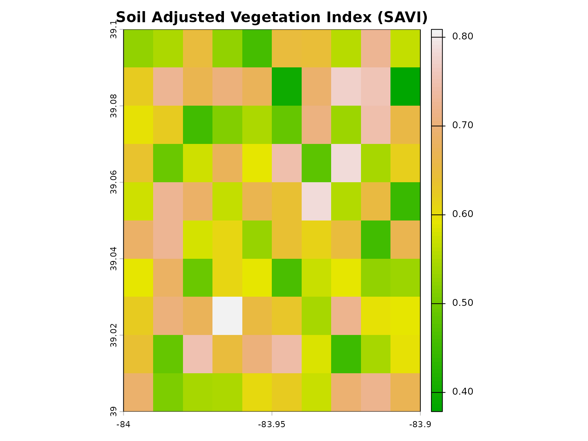

Vegetation Index Analysis with geospatialsuite
geospatialsuite Development Team
Source:vignettes/vegetation-indices.Rmd
vegetation-indices.RmdIntroduction
This vignette demonstrates comprehensive vegetation analysis using geospatialsuite’s 60+ vegetation indices. Learn to monitor plant health, detect stress, and analyze agricultural productivity.
Quick Start with Sample Data
# Load sample spectral bands
red <- load_sample_data("sample_red.rds")
nir <- load_sample_data("sample_nir.rds")
blue <- load_sample_data("sample_blue.rds")
# Calculate NDVI using geospatialsuite
ndvi <- calculate_vegetation_index(
red = red,
nir = nir,
index_type = "NDVI"
)
# Visualize
plot(ndvi, main = "Normalized Difference Vegetation Index (NDVI)",
col = terrain.colors(100))
Understanding Vegetation Indices
Common Vegetation Indices
NDVI (Normalized Difference Vegetation Index)
# Calculate NDVI with geospatialsuite
ndvi <- calculate_vegetation_index(
red = red,
nir = nir,
index_type = "NDVI"
)
# Summary statistics
summary(values(ndvi))
#> NDVI
#> Min. :0.4785
#> 1st Qu.:0.6473
#> Median :0.7172
#> Mean :0.7069
#> 3rd Qu.:0.7725
#> Max. :0.8752
# Classify vegetation density
vegetation_classes <- classify(ndvi,
rcl = matrix(c(-Inf, 0.2, 1,
0.2, 0.6, 2,
0.6, Inf, 3),
ncol = 3, byrow = TRUE)
)
plot(vegetation_classes,
main = "Vegetation Density Classes",
col = c("brown", "yellow", "darkgreen"),
legend = FALSE)
legend("topright",
legend = c("Sparse", "Moderate", "Dense"),
fill = c("brown", "yellow", "darkgreen"))
EVI (Enhanced Vegetation Index)
# Calculate EVI using geospatialsuite
evi <- calculate_vegetation_index(
red = red,
nir = nir,
blue = blue,
index_type = "EVI"
)
# Compare NDVI and EVI
par(mfrow = c(1, 2))
plot(ndvi, main = "NDVI", col = terrain.colors(100))
plot(evi, main = "EVI", col = terrain.colors(100))
SAVI (Soil Adjusted Vegetation Index)
# Calculate SAVI with geospatialsuite
savi <- calculate_vegetation_index(
red = red,
nir = nir,
index_type = "SAVI"
)
plot(savi, main = "Soil Adjusted Vegetation Index (SAVI)",
col = terrain.colors(100))
Calculate Multiple Indices
# geospatialsuite can calculate multiple indices at once
indices <- calculate_multiple_indices(
red = red,
nir = nir,
blue = blue,
indices = c("NDVI", "EVI", "SAVI", "GNDVI", "NDRE"),
output_stack = TRUE
)
# Plot all indices
plot(indices, main = names(indices))
# Access individual indices
ndvi_layer <- indices$NDVI
evi_layer <- indices$EVIWorking with Multi-band Rasters
# Load multi-band raster
multiband <- load_sample_data("sample_multiband.rds")
# Check available bands
names(multiband)
#> [1] "blue" "green" "red" "nir" "swir1"
# geospatialsuite's auto-detect feature
ndvi_auto <- calculate_vegetation_index(
spectral_data = multiband,
index_type = "NDVI",
auto_detect_bands = TRUE # Automatically finds red and nir!
)
# Calculate multiple indices with auto-detection
indices_auto <- calculate_multiple_indices(
spectral_data = multiband,
indices = c("NDVI", "EVI", "GNDVI"),
auto_detect_bands = TRUE,
output_stack = TRUE
)Working with Satellite Imagery
Loading and Processing Landsat Data
# Use geospatialsuite with Landsat imagery
# 1. Load Landsat bands using geospatialsuite
landsat_bands <- load_raster_data(
"landsat/LC08_L2SP_021033_20240715/",
pattern = "SR_B[2-5].TIF$",
verbose = TRUE
)
# geospatialsuite validates and loads all bands
# Extract individual bands (assuming they're scaled to 0-1)
blue <- landsat_bands[[1]]
green <- landsat_bands[[2]]
red <- landsat_bands[[3]]
nir <- landsat_bands[[4]]
# 2. Calculate indices using geospatialsuite
# It has 60+ pre-programmed indices
landsat_indices <- calculate_multiple_indices(
red = red,
nir = nir,
blue = blue,
green = green,
indices = c("NDVI", "EVI", "SAVI", "GNDVI", "MSAVI", "OSAVI"),
output_stack = TRUE
)
# 3. Visualize using geospatialsuite
quick_map(landsat_indices$NDVI, title = "Landsat 8 NDVI")Processing Sentinel-2 Imagery
# Use geospatialsuite with Sentinel-2
# 1. Load Sentinel-2 bands using geospatialsuite
s2_bands <- load_raster_data(
"sentinel2/S2A_MSIL2A_20240715/GRANULE/.../IMG_DATA/R10m/",
pattern = "*_B0[2-8]_10m.jp2$",
verbose = TRUE
)
# geospatialsuite handles JPEG2000 format
# Assuming bands are ordered: blue, green, red, nir
# and scaled to 0-1
# 2. Calculate comprehensive indices with geospatialsuite
s2_indices <- calculate_multiple_indices(
red = s2_bands[[3]],
nir = s2_bands[[4]],
blue = s2_bands[[1]],
green = s2_bands[[2]],
indices = c("NDVI", "EVI", "SAVI", "GNDVI", "NDMI"),
output_stack = TRUE
)
# 3. Visualize
quick_map(s2_indices$NDVI, title = "Sentinel-2 NDVI (10m)")Multi-Temporal Analysis
# Track vegetation changes with geospatialsuite
# Load imagery from different dates
dates <- c("2024-05-01", "2024-06-01", "2024-07-01")
ndvi_series <- list()
for (date in dates) {
# Load bands for each date using geospatialsuite
bands <- load_raster_data(
sprintf("satellite/%s/", date),
pattern = "B[4-5].tif$"
)
red_date <- bands[[1]]
nir_date <- bands[[2]]
# Calculate NDVI using geospatialsuite
ndvi_series[[date]] <- calculate_vegetation_index(
red = red_date,
nir = nir_date,
index_type = "NDVI"
)
}
# Stack time series
ndvi_stack <- rast(ndvi_series)
names(ndvi_stack) <- dates
# Visualize temporal progression
plot(ndvi_stack, main = paste("NDVI -", dates))
# Calculate change
ndvi_change <- ndvi_stack[[3]] - ndvi_stack[[1]]
plot(ndvi_change,
main = "NDVI Change (Jul - May)",
col = colorRampPalette(c("red", "white", "green"))(100))Specialized Vegetation Indices
Chlorophyll Content Indices
# Green NDVI - sensitive to chlorophyll content
green <- load_sample_data("sample_green.rds")
# Calculate using geospatialsuite
gndvi <- calculate_vegetation_index(
green = green,
nir = nir,
index_type = "GNDVI"
)
plot(gndvi, main = "Green NDVI - Chlorophyll Indicator",
col = colorRampPalette(c("white", "lightgreen", "darkgreen"))(100))
Water Content Indices
# Load SWIR band for water content analysis
swir1 <- load_sample_data("sample_swir1.rds")
# NDMI using geospatialsuite
ndmi <- calculate_vegetation_index(
nir = nir,
swir1 = swir1,
index_type = "NDMI"
)
plot(ndmi, main = "Vegetation Water Content (NDMI)",
col = colorRampPalette(c("brown", "yellow", "blue"))(100))
Advanced Analysis
Zonal Statistics
# Load sample boundary
boundary <- load_sample_data("sample_boundary.rds")
# Calculate NDVI using geospatialsuite
ndvi <- calculate_vegetation_index(red = red, nir = nir, index_type = "NDVI")
# Extract statistics for the region
stats <- terra::extract(ndvi, vect(boundary), fun = function(x) {
c(mean = mean(x, na.rm = TRUE),
sd = sd(x, na.rm = TRUE),
min = min(x, na.rm = TRUE),
max = max(x, na.rm = TRUE))
})
print(stats)
#> ID NDVI NDVI.1 NDVI.2 NDVI.3
#> [1,] 1 0.706874 0.08445837 0.4784537 0.8752122Field-Level Analysis
# Load sample field points
field_points <- load_sample_data("sample_points.rds")
# Calculate NDVI using geospatialsuite
ndvi <- calculate_vegetation_index(red = red, nir = nir, index_type = "NDVI")
# Extract using geospatialsuite's spatial join
field_ndvi <- universal_spatial_join(
source_data = field_points,
target_data = ndvi,
method = "extract"
)
# View results
head(field_ndvi)
#> Simple feature collection with 6 features and 7 fields
#> Geometry type: POINT
#> Dimension: XY
#> Bounding box: xmin: -83.94662 ymin: 39.00987 xmax: -83.91607 ymax: 39.09223
#> Geodetic CRS: WGS 84
#> site_id ndvi evi crop_type elevation_m soil_moisture
#> 1 SITE_01 0.593 0.274 soybeans 269 0.27
#> 2 SITE_02 0.660 0.485 wheat 283 0.28
#> 3 SITE_03 0.646 0.579 corn 211 0.21
#> 4 SITE_04 0.388 0.483 pasture 256 0.31
#> 5 SITE_05 0.776 0.588 corn 219 0.35
#> 6 SITE_06 0.645 0.539 soybeans 205 0.30
#> geometry extracted_NDVI
#> 1 POINT (-83.94662 39.04604) 0.7709993
#> 2 POINT (-83.94162 39.00987) 0.7667765
#> 3 POINT (-83.94104 39.02066) 0.7647660
#> 4 POINT (-83.9309 39.09223) 0.7207893
#> 5 POINT (-83.93327 39.03194) 0.6405917
#> 6 POINT (-83.91607 39.02653) 0.7215534Working with Real Field Data
# Complete field analysis workflow with geospatialsuite
library(sf)
# 1. Load field boundaries
fields <- sf::st_read("farm_data/field_boundaries.shp")
# 2. Load and process satellite data using geospatialsuite
satellite_bands <- load_raster_data(
"satellite/imagery/",
pattern = "B[2-5].tif$"
)
# 3. Calculate indices using geospatialsuite
indices <- calculate_multiple_indices(
red = satellite_bands[[3]],
nir = satellite_bands[[4]],
blue = satellite_bands[[1]],
green = satellite_bands[[2]],
indices = c("NDVI", "EVI", "GNDVI", "SAVI"),
output_stack = TRUE
)
# 4. Extract to fields using geospatialsuite
fields_with_indices <- universal_spatial_join(
source_data = fields,
target_data = indices,
method = "extract"
)
# geospatialsuite extracted all 4 indices
# Each field now has mean NDVI, EVI, GNDVI, SAVI
names(fields_with_indices)
# 5. Visualize using geospatialsuite
quick_map(fields_with_indices, variable = "NDVI")List Available Indices
# View all available vegetation indices in geospatialsuite
all_indices <- list_vegetation_indices()
# Show first few indices
head(all_indices[, c("Index", "Category", "Description", "Required_Bands")], 10)
#> Index Category Description Required_Bands
#> 1 NDVI basic Normalized Difference Vegetation Index Red, NIR
#> 2 SAVI basic Soil Adjusted Vegetation Index Red, NIR
#> 3 MSAVI basic Modified Soil Adjusted Vegetation Index Red, NIR
#> 4 OSAVI basic Optimized Soil Adjusted Vegetation Index Red, NIR
#> 5 EVI basic Enhanced Vegetation Index Red, NIR, Blue
#> 6 EVI2 basic Two-band Enhanced Vegetation Index Red, NIR
#> 7 DVI basic Difference Vegetation Index Red, NIR
#> 8 RVI basic Ratio Vegetation Index Red, NIR
#> 9 GNDVI basic Green NDVI Green, NIR
#> 10 WDVI basic Weighted Difference Vegetation Index Red, NIR
# Filter by category
health_indices <- all_indices[all_indices$Category == "basic", ]
print(health_indices[, c("Index", "Description")])
#> Index Description
#> 1 NDVI Normalized Difference Vegetation Index
#> 2 SAVI Soil Adjusted Vegetation Index
#> 3 MSAVI Modified Soil Adjusted Vegetation Index
#> 4 OSAVI Optimized Soil Adjusted Vegetation Index
#> 5 EVI Enhanced Vegetation Index
#> 6 EVI2 Two-band Enhanced Vegetation Index
#> 7 DVI Difference Vegetation Index
#> 8 RVI Ratio Vegetation Index
#> 9 GNDVI Green NDVI
#> 10 WDVI Weighted Difference Vegetation IndexBest Practices
Index Selection Guidelines
- NDVI: General vegetation monitoring
- EVI: Dense vegetation, atmospheric correction
- SAVI: Sparse vegetation, early growth
- GNDVI: Chlorophyll content, nitrogen status
- NDMI: Water stress detection
Data Quality Considerations
# Check for valid value ranges
ndvi <- calculate_vegetation_index(red = red, nir = nir, index_type = "NDVI")
# NDVI should be between -1 and 1
ndvi_stats <- global(ndvi, fun = "range", na.rm = TRUE)
cat("NDVI range:", ndvi_stats[1,1], "to", ndvi_stats[2,1], "\n")
#> NDVI range: 0.4784537 to NASummary
This vignette covered:
- Using geospatialsuite’s
calculate_vegetation_index()for 60+ indices - Using
calculate_multiple_indices()for batch processing - Auto band detection with
auto_detect_bands = TRUE - Loading satellite data with
load_raster_data() - Spatial extraction with
universal_spatial_join() - Multi-temporal analysis workflows
- Field-level analysis
- Best practices for index selection
geospatialsuite simplifies vegetation analysis with:
- Pre-programmed indices
- Automatic band detection
- Robust error handling
- Simple, consistent API
For more information:
- Agricultural Applications with geospatialsuite
- Complete Workflows and Case Studies
- Getting Started with geospatialsuite